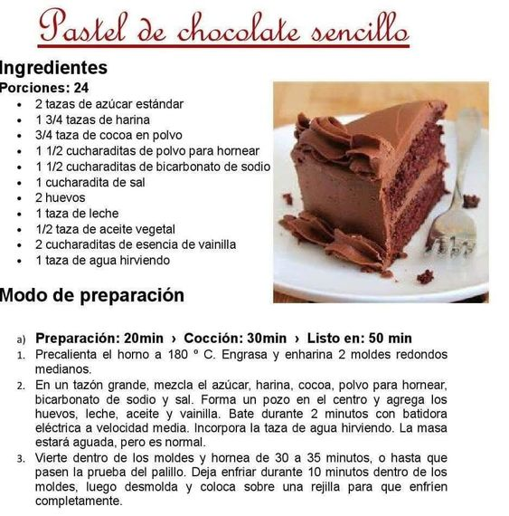

Nosotros
Los chocolates "Mi dulce Aitana" son creados a partir de recetas heredadas de nuestras abuelas, Empresa creada de manera familiar, comenzando en sus inicios comercializandose entre conocido y amigos. Son elaborados de manera artesanal , como los hacìa la abuela .
Baño de chocolate
El chocolate de cobertura se utiliza para cubrir y bañar tartas, bizcochos, cake pops, pasteles, galletas... Es un chocolate de alta calidad y con un alto porcentaje de manteca de cacao, la que lo hace más fluido y un chocolate especialmente indicado para repostería ¡un imprescindible en la cocina de cualquier amante de la repostería!
Receta del dìa
Nuestras Delicias
Chocotorta
Para comenzar con nuestra receta de brownies de chocolate, vamos a colocar la manteca y el chocolate picados en una sartén, y llevarlos a fuego bien bajo.Lo tapamos y vamos a dejarlo por unos 5 minutos sin tocar. Ahora retirar del fuego y revolver los ingredientes hasta que esté todo derretido e integrado. A parte vamos a batir los 2 huevos con el azúcar hasta que queden bien blancos, esto es clave para que el brownie casero quede bien húmedo. Agregar el chocolate derretido y batir hasta que esté integrado. Sumar las nueces en pedazos grandes o como más les guste. Sumar el harina 0000 tamizada en dos partes e integrar todo como se ve en el video. Es importante batir fuerte antes de pasar el brownie de chocolate al molde. Colocar en una placa y cocinar al horno fuerte (200-220°) por 20 minutos.